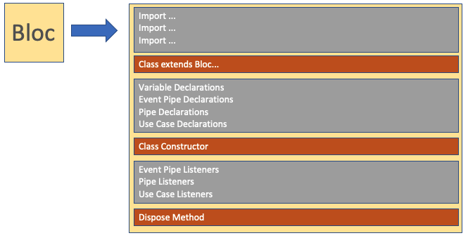
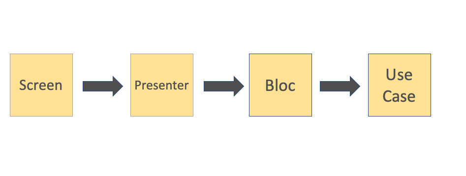
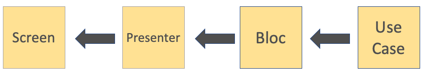

Bloc
The Bloc contains the Use Case(s) that have the specific business logic/processes
A Bloc can contain one or many Use Cases
Presenter
The presenter creates the Screen and manages the Navigation of the Screen actions
Screen
The Screen matches the view model to the the UI elements

General Bloc Structure
Class Imports
Class Extends Bloc
Declarations
Class Constructure with Input Parameters
Event Pipe, Pipe, and Use Case Listers are Setup
- The
Bloc class should not be a container for all Use Case actions all mixed together!
Dispose function for Proper Cleanup
Use Case(s)
Use Case(s) should contain the specific actions and logical operations pertinent to the Use Case

General Presenter Structure
Class Imports
Class Extends Presenter<[Bloc],[ViewModel],[Screen]>
Variable Declarations
Class Constructor
Overrides
- This is where the
Screen is created
- This is where the Loading Screen is created
- This is where the primary View Model changes are picked up at from the
Bloc listener
Functions that handle navigation for the Screen being created
Recommendations
Create 1 Pipe for the View Model to be passed to the Screen
Create 1 Use Case Pipe that handles all Use Case actions through that one pipe to the Bloc from the Screen (back and forth)

Screen Creation
The screen is created in the Presenter's buildScreen override function
General Screen Structure
Class Imports
Class Extends Screen
Variable Declarations
Presenter Function Declarations
Class Constructor with Parameters from the Presenter, such as:
- Any other Parameter you would like to pass
Widget build function override

The Path of Action
- Get the action event from the
Screen, via a callback function such as onTap
- Utilize the
Presenter function provided via the Screenconstructor, to send data/action to the Presenter class
- You should have access to the
Bloc via the Presenter class
- You should not access the
Bloc via the Screen class
- Utilize a
Use Case event pipe to send the pertinent action/data through the event pipe to the Use Case listener in the Bloc class
- Finally, perform the specific
Use Case action/logic via the listener in the Bloc class
- If a
Use Case is being utilized, execute the action within the Use Case class, not within the Bloc class
- The
Use Case can have its own public models, variables, etc. that are accessible via the Use Case instance within the Bloc

The Path of Action
- Complete the specific action/logic within the
Use Case class (this should also be an instance referenced from the Blocclass)
- Assuming some sort of callback is in order, update the specific model, variable, object, etc. in the
Use Case class
- Retrieve the new value in the
Presenter class by referencing the Bloc instance, which will have access to the Use Case instance,
and you can now get the new updated Use Case model, variable, etc.
- If the
Screen that was created needs to utilize the callback in some form, use the Presenter to then send the callback to the Screen

The Path of Action
- Get the action event from the
Screen, via a callback function such as onTap
- Utilize a
Presenter function provided via the Screenconstructor to send an input event/data to the Presenter class
- Within the
Presenter class' function, execute the proper navigation via a MaterialPageRoute builder within a Navigator.push event